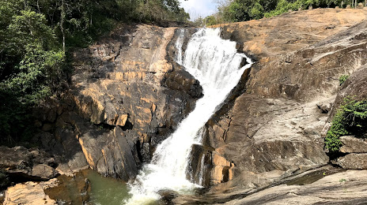

KANTHANPARA

KURUVADWEEP

EDAKKAL CAVES

Wayanad is a rural district in Kerala state, southwest India. In the east, the Wayanad Wildlife Sanctuary is a lush, forested region with areas of high altitude, home to animals including Asiatic elephants, tigers, leopards and egrets. In the Ambukuthi Hills to the south, Edakkal Caves contain ancient petroglyphs, some dating back to the Neolithic age.
Known for its soothing temperature all around the year, Wayanad is the ultimate destination to escape the scorching sun of North India. This place doesn’t only offer its cool temperature but along with that, it has untouched woods, misty mountains, and long spread plantations. Often called the spice garden of India, Wayanad is laid with many tourist places and vast orchards of various spices like cardamom, Black pepper, Star Anise, Fenugreek, Black cumin and more. These green orchards of distinct spices give this place a different fragrance which is further enriched with the aroma of coffee plantation, nutrition of organic fruits and vegetables and waving paddy fields.
Having said this much about the greenery in the city, it is understood that it will have numerous wildlife sanctuaries, reserves and national parks protecting the rural life of the forests. Adding to all the natural beauty you have India’s largest earth dam and Asia’s second-largest earth dam, Banasura Sagar Dam in Wayanad. Having mighty mountains, dense woods, and gushing rivers, Wayanad is a hub for trekking, hiking, mountaineering, rock climbing, rappelling, camping, and many more adventurous activities.